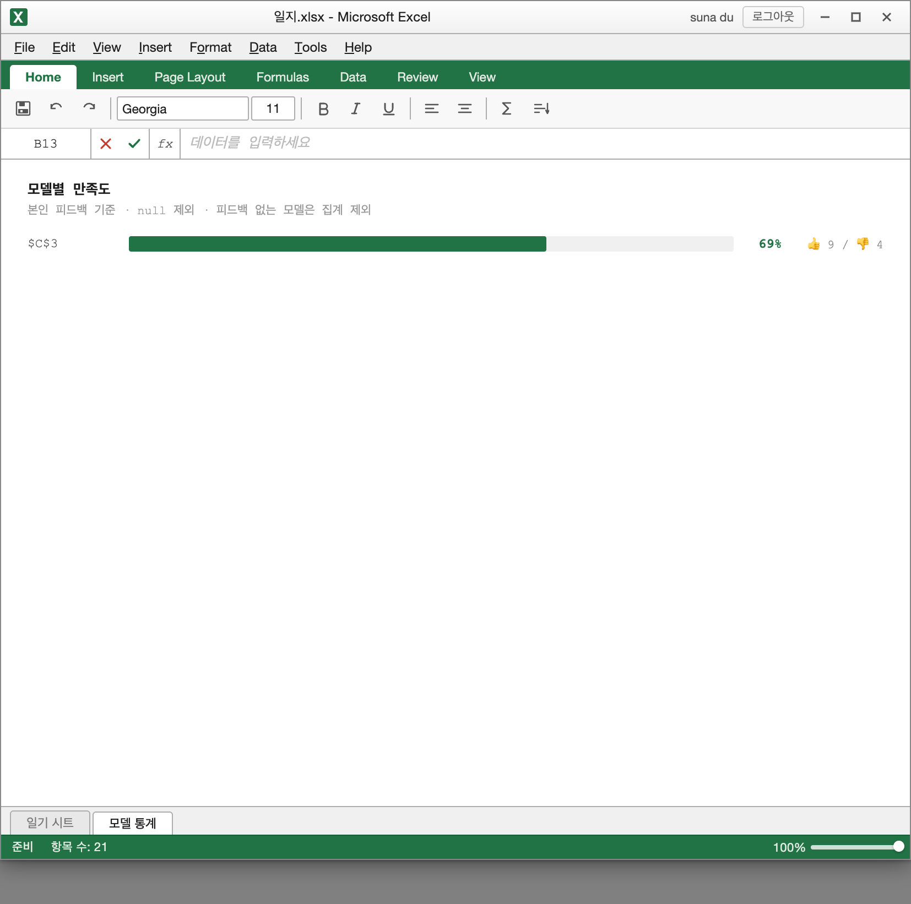
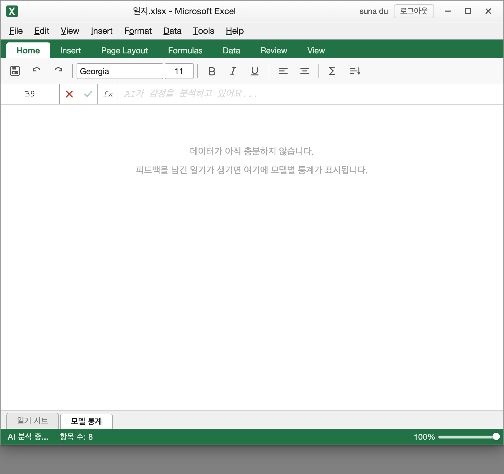

모델별 만족도 대시보드 + CORS 강화
2026-05-23 ~ 2026-05-24
피드백 및 모델 추적 데이터를 기반으로 모델별 만족도 대시보드를 구현하고,
api/chat.jsCORS 정책을 강화하여 보안 기술 부채를 해소한다.
| # | 구분 | 안건 | 결과 |
|---|---|---|---|
| 1 | OQ 결정 | 만족도 대시보드 시각화 방식 | ✅ Resolved |
| 2 | OQ 결정 | 모델 익명화 레이블 방식 | ✅ Resolved |
| 3 | OQ 결정 | api/chat.js CORS 강화 여부 | ✅ Resolved |
| 4 | 확정 | Sprint 7 스코프 및 수용 기준 확정 | ✅ 확정 |
| # | 결정 내용 | 담당 |
|---|---|---|
| OQ-1 | CSS/SVG 기반 바 차트 — CDN 없이, 싱글 HTML 구조 호환 | FE + UX |
| OQ-2 |
셀 참조 계열 레이블 ($A$1, $B$2 …)sha256 해시 결정론적 선택 · Firestore에 model(실제 ID) + modelLabel(표시용) 이중 저장
|
BE + PM |
| OQ-3 |
CORS 프로덕션 도메인 제한 — api/log.js 패턴 적용한계 주석 명시 + Firebase ID Token 검증 Sprint 8 TODO |
BE |
| 결정-5 |
FEEDBACK_MIN_SAMPLE 임시 완화: 5 → 1 (2026-05-24)근거: Sprint 7 시점 피드백 미축적 · 복원 조건: DAU 50+ 또는 2주치 피드백 충분 확보 후 Sprint 8 재검토 |
PM |
BE
api/chat.js — CORS api/log.js 패턴 적용api/chat.js — Auth 부재 한계 주석 + Sprint 8 TODOapi/chat.js — sha256 해시로 modelLabel 생성modelLabel 포함FE
config.js — FEEDBACK_MIN_SAMPLE = 1QA
feedback:null 혼재 / 편중 시나리오modelLabel Firestore 저장 확인 (코드 검증)모델 라벨 생성 (서버)
라벨 풀 (셀 참조 계열)
대시보드 집계 로직 (클라이언트)
modelLabel 기준 Map 집계feedback:null 분모 제외Firestore entry 스키마
api/chat.js CORS 강화변경 내용
localhost(:\d+)? 패턴 허용ALLOWED_ORIGIN env 확장 지원한계 및 보안 공백
curl / 서버 직접 호출은 여전히 가능Sprint 8 후보
| 우선순위 | QA 발견 사항 | 조치 |
|---|---|---|
| HIGH | pct === null 가드 미존재 — 피드백 있지만 0/0인 케이스 오류 |
else if (pct === null) 분기 추가 ✓ |
| MED | 통계 탭 신규 항목 추가 시 갱신 안 됨 | applyAnalysisResult에서 renderStats() 호출 ✓ |
| MED | role="tabpanel" 접근성 속성 누락 |
두 탭 패널에 aria-* 속성 추가 ✓ |
| LOW | CORS 배포 후 프로덕션 도메인 정상 동작 확인 | ⚠ 이월 (배포 후 확인 필요) |
orderBy('createdAt', 'asc')로 변경 · 로드/추가 시 모두 최신순 통일
Sprint 8 후보
api/chat.js 완전 방어 (Sprint 7 이월)이월 조건부 항목
기술 부채 현황
modelLabel 없음 — 이전 데이터 처리 필요
데이터 축적 현황
model 저장modelLabel 저장 · 배포
데이터 있는 상태 — $C$3 모델 만족도 69% (👍 9 / 👎 4)

빈 상태 — 피드백 없을 때 "데이터가 아직 충분하지 않습니다" 표시
감사합니다